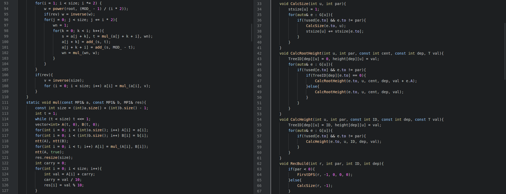

概要
Academic
研究関連で実装したものおよび競技プログラミングよりも学問よりと思われるコードを置いています
(例)
BinarySearchTree
平衡二分探索木関連のコードを置いています. すべて RBST で実装しているので乱択アルゴリズムです. 決定的なものが欲しい方は他の人の赤黒木の実装を参考にしてください.
(例)
ClassicProblem
いくつかの有名問題のコードを置いています. 有名問題は挙げればキリがないので、そのうちの一部を適当に並べてみたという感じです.
(例)
Computation (Basic)
計算系(雑) のアルゴリズムのうち基本的なもののコードを置いています.
(例)
Computation (Advanced)
計算系のアルゴリズムのうち発展的なもののコードを置いています.
(例)
DataStructure (Basic)
データ構造のアルゴリズムのうち基本的なもののコードを置いています. なお SegmentTree は SegmentTrees に、 永続系は PersistentDataStructure に置いています.
(例)
DataStructure (Advanced)
データ構造のアルゴリズムのうち発展的なもののコードを置いています.
(例)
DataStructure (OnGraph)
グラフを対象としたデータ構造のアルゴリズムのコードを置いています.
(例)
FFTs
FFT(高速フーリエ変換)関連のコードを置いています.
(例)
Geometry
計算幾何の有名なアルゴリズムのコードを置いています. ここに関しては all_in
(例)
GraphDecomposition
Graph (SP, MST)
グラフの最短距離および最小全域木を求めるアルゴリズムを置いています.
(例)
Misc
計算幾何の有名なアルゴリズムのコードを置いています. ここに関しては all_in
(例)
MultiPrecitionIntegar
計算幾何の有名なアルゴリズムのコードを置いています. ここに関しては all_in
(例)
NetworkFlow
計算幾何の有名なアルゴリズムのコードを置いています. ここに関しては all_in
(例)
PersistentDataStructure
計算幾何の有名なアルゴリズムのコードを置いています. ここに関しては all_in
(例)
String
計算幾何の有名なアルゴリズムのコードを置いています. ここに関しては all_in
(例)
SyntaxAnalysis
計算幾何の有名なアルゴリズムのコードを置いています. ここに関しては all_in
(例)
Viewer
計算幾何の有名なアルゴリズムのコードを置いています. ここに関しては all_in
(例)
For Python
主要なコードの一部を Python に移植したものを置いています.
ファイルの階層構造
.
├── Academic
│ ├── Arbolescence.hpp
│ ├── BIT_2D_RangeAdd_RangeSum.hpp
│ ├── DominatorTree.hpp
│ ├── PolynomialSolver.hpp
│ ├── SA_IS.hpp
│ ├── SteinerTree.hpp
│ ├── UndirectedMinCut.hpp
│ ├── exact_treewidth_*O(2^n).cpp
│ ├── exact_treewidth_pspace.cpp
│ ├── header.hpp
│ ├── lineartime_RMQ.hpp
│ ├── lineartime_superbubble.hpp
│ ├── max_flow_PushRelabel.hpp
│ ├── pollard_prime_factorize.hpp
│ └── runge_kutta.hpp
├── Competitive_Programming
│ ├── BinarySearchTree
│ │ ├── RBST_Array.hpp
│ │ ├── RBST_Set.hpp
│ │ ├── RBST_lazy.hpp
│ │ ├── RBST_query.hpp
│ │ └── ordered_set.cpp
│ ├── ClassicProblem
│ │ ├── LCS.hpp
│ │ ├── LPS.hpp
│ │ ├── edit_distance.cpp
│ │ ├── histogram_largest_rectangle.cpp
│ │ ├── largest_rectangle.cpp
│ │ └── limitedknapsack_slidemin.hpp
│ ├── Computation_Advanced
│ │ ├── 01_knapsack_bound_branch.hpp
│ │ ├── BabyStep_GiantStep.hpp
│ │ ├── CRT.hpp
│ │ ├── Hungarian.hpp
│ │ ├── Lagrange_interpolation.hpp
│ │ ├── Mapping_12_phase.hpp
│ │ ├── SlideMin.hpp
│ │ ├── inversion_count.hpp
│ │ ├── kitamasa.hpp
│ │ ├── miller_rabbin.hpp
│ │ ├── parallel_binary_search.hpp
│ │ ├── rapid_count_divisor.hpp
│ │ ├── simplex.hpp
│ │ └── simplex_exit_loop.hpp
│ ├── Computation_Basic
│ │ ├── RecurrenceSolver.hpp
│ │ ├── Zeller.hpp
│ │ ├── all_fac.hpp
│ │ ├── allxor.hpp
│ │ ├── binary_tree.hpp
│ │ ├── divisor.hpp
│ │ ├── gcd_lcm.hpp
│ │ ├── mod_combination.hpp
│ │ ├── mod_inv.hpp
│ │ ├── mod_pow.hpp
│ │ ├── next_combination.hpp
│ │ ├── prime_factorize.hpp
│ │ ├── prime_judge.hpp
│ │ └── prime_number.hpp
│ ├── DataStructure_Advanced
│ │ ├── BIT_2D_RangeAdd_RangeSum.hpp
│ │ ├── BIT_two_dimension.hpp
│ │ ├── LIS2D.hpp
│ │ ├── Moalgorithm.hpp
│ │ ├── WaveletMatrix.hpp
│ │ ├── WaveletTree.hpp
│ │ ├── convex_hull_trick.hpp
│ │ └── dynamic_CHT.hpp
│ ├── DataStructure_Basic
│ │ ├── BIT.hpp
│ │ ├── BIT_1D_RangeAdd_RangeSum.hpp
│ │ ├── Binary_Trie.hpp
│ │ ├── QuadraticDecomposition.hpp
│ │ ├── SparseTable.hpp
│ │ ├── SparseTable_index.hpp
│ │ ├── Trie.hpp
│ │ ├── UpdateInterval.hpp
│ │ └── UpdateInterval_plus.hpp
│ ├── DataStructure_On_Graph
│ │ ├── HL_decomposition_query.hpp
│ │ ├── HL_decomposition_subtree.hpp
│ │ ├── LCA.hpp
│ │ ├── LinkCutTree.hpp
│ │ ├── RootedCentroidDecomposition.hpp
│ │ ├── UnionFind.hpp
│ │ ├── UnionFind_reverse.hpp
│ │ ├── Weighted_UnionFind.hpp
│ │ ├── centroid_decomposition.hpp
│ │ ├── skew_heap.hpp
│ │ └── skew_heap_lazy.hpp
│ ├── FFTs
│ │ ├── FFT.hpp
│ │ ├── FWHT.hpp
│ │ ├── NTT.hpp
│ │ └── NTT_arbitrary_modulo.hpp
│ ├── Geometry
│ │ ├── all_in.hpp
│ │ ├── area.hpp
│ │ ├── basic.hpp
│ │ ├── closest_pair.hpp
│ │ ├── convex.hpp
│ │ ├── crosspoint.hpp
│ │ ├── distance.hpp
│ │ ├── intersect.hpp
│ │ ├── line.hpp
│ │ ├── slope.hpp
│ │ ├── tangent.hpp
│ │ └── voronoi.hpp
│ ├── Graph
│ │ ├── 2-SAT.hpp
│ │ ├── Arbolescence.hpp
│ │ ├── SteinerTree.hpp
│ │ ├── UndirectedMinCut.hpp
│ │ ├── centroid.hpp
│ │ ├── clique_number.hpp
│ │ ├── color_number.hpp
│ │ ├── euler_tour.hpp
│ │ ├── euler_trail.hpp
│ │ ├── merge_tech.hpp
│ │ ├── topological_sort.hpp
│ │ ├── topological_sort_queue.hpp
│ │ ├── tree_diameter.hpp
│ │ └── tree_isomorphic.hpp
│ ├── Graph_Decomposition
│ │ ├── DominatorTree.hpp
│ │ ├── FunctionalGraph.hpp
│ │ ├── Namori.hpp
│ │ ├── SCC.hpp
│ │ ├── articulation_node.hpp
│ │ └── biconnected.hpp
│ ├── Graph_SP_MST
│ │ ├── Kruskal.hpp
│ │ ├── bellman_ford.hpp
│ │ ├── dijkstra.hpp
│ │ ├── dijkstra_dense_graph.hpp
│ │ ├── dijkstra_rapid.hpp
│ │ ├── prim.hpp
│ │ ├── prim_dense_graph.hpp
│ │ └── warshall_floyd.hpp
│ ├── ICPC
│ │ ├── Dice.hpp
│ │ ├── ICPC_matrix.hpp
│ │ ├── ICPC_rolling_hash_double.hpp
│ │ └── ICPC_rollinghash.hpp
│ ├── Matrix
│ │ ├── bit_matrix.hpp
│ │ └── matrix.hpp
│ ├── Misc
│ │ ├── EraseOuterInnerInterval.hpp
│ │ ├── hoge.cpp
│ │ ├── input_ouput.hpp
│ │ ├── int128.hpp
│ │ ├── loop_unrolling.cpp
│ │ ├── template.cpp
│ │ └── time.hpp
│ ├── MultiPrecisionInteger
│ │ ├── multi_precision_integer.hpp
│ ├── NetworkFlow
│ │ ├── Dinic.hpp
│ │ ├── bipartite_matching.hpp
│ │ ├── ford_fulkerson.hpp
│ │ ├── limited_mincap_maxflow.hpp
│ │ ├── min_cost_flow.hpp
│ │ ├── min_cost_flow_DAG.hpp
│ │ └── min_cost_flow_exist_negative_edge.hpp
│ ├── PersistentDataStructure
│ │ ├── RBST_lazy_persistent.hpp
│ │ ├── persistent_Array.hpp
│ │ ├── persistent_RBST_Set.hpp
│ │ ├── persistent_UnionFind.hpp
│ │ └── persistent_segtree.hpp
│ ├── SegmentTrees
│ │ ├── OrthogonalRangeReport.hpp
│ │ ├── basic
│ │ │ ├── PointUpdateQueryandRangeMinQuery_with_index.hpp
│ │ │ ├── Range01XorQueryandRangeSumQuery.hpp
│ │ │ ├── RangeAddQueryandRangeMinQuery.hpp
│ │ │ ├── RangeAddQueryandRangeMinQuery_with_index.hpp
│ │ │ ├── RangeAddQueryandRangeSumQuery.hpp
│ │ │ ├── RangeAndQuery_RangeOrQueryandRangeMinQuery.hpp
│ │ │ ├── RangeMaxUpdateQueryandRangeSumQuery.hpp
│ │ │ ├── RangeModuloQueryandRangeSumQuery.hpp
│ │ │ ├── RangeTree_PointUpdate.hpp
│ │ │ ├── RangeUpdateQuery_RangeAddQueryandRangeMinQuery.hpp
│ │ │ ├── RangeUpdateQuery_RangeAddQueryandRangeSumQuery.hpp
│ │ │ ├── RangeUpdateQueryandRangeMinQuery.hpp
│ │ │ ├── RangeUpdateQueryandRangeMinQuery_with_index.hpp
│ │ │ ├── RangeUpdateQueryandRangeSumQuery.hpp
│ │ │ ├── segtree.hpp
│ │ │ └── segtree_nonrecursion.hpp
│ │ ├── dynamic_segtree.hpp
│ │ ├── dynamic_segtree_lazy.hpp
│ │ └── merge_segtree.hpp
│ ├── String
│ │ ├── Aho-Corasick.hpp
│ │ ├── KMP.hpp
│ │ ├── SA_IS.hpp
│ │ ├── SA_IS_binary_search.hpp
│ │ ├── manacher.hpp
│ │ ├── minimum_loop.hpp
│ │ ├── rolling_hash.hpp
│ │ ├── rolling_hash_double.hpp
│ │ ├── suffix_arrayandlcp.hpp
│ │ └── z_algorithm.hpp
│ ├── SyntaxAnalysis
│ │ └── syntax_analysis_arithmetic.cpp
│ ├── Viewer
│ │ ├── graphviz.hpp
│ │ ├── matplotlib.cpp
│ │ └── matplotlib.hpp
│ └── header.hpp
├── README.md
└── _config.yml
当テンプレートについて
当テンプレートはhtml5+CSS3(レスポンシブWEBデザイン)です
当テンプレートは、パソコン、スマホ、タブレットでhtml共通のレスポンシブWEBデザインになっております。
古いブラウザ（※特にIE8以下）で閲覧した場合にCSSの一部が適用されない（角を丸くする設定など）のでご注意下さい。
各デバイスごとのレイアウトチェックは
最終的なチェックは実際のタブレットやスマホで行うのがおすすめですが、臨時チェックは最新のブラウザ(IEならIE10以降)で行う事もできます。ブラウザの幅を狭くしていくと、各端末サイズに合わせたレイアウトになります。
注意：cssはリアルタイムで反映されますが、javascript(js)はブラウザを再読み込みさせないと反映されないので、レイアウトが切り替わったらブラウザを再読み込みさせて下さい。javascriptは小さい端末用の開閉ブロックなどに使われています。
各デバイス用のスタイル変更は
cssフォルダのstyle.cssファイルで行って下さい。詳しい説明も入っています。
前半はパソコン環境を含めた全端末の共通設定になります。中盤以降、各端末向けのスタイルが追加設定されています。
media=" (～)"の「～」部分でcssを切り替えるディスプレイのサイズを設定しています。ここは必要に応じて変更も可能です。
当テンプレートの使い方
titleタグ、copyright、metaタグ、他の設定
■titleタグの設定はとても重要です。念入りにワードを選んで適切に入力しましょう。
まず、htmlソースが見れる状態にして、上から６行目あたりにある、
<title>初心者向けホームページテンプレート tp_beginner5</title>
を編集しましょう。
あなたのホームページ名が「SAMPLE SITE」だとすれば、
<title>SAMPLE SITE</title>
とすればＯＫです。
■copyrightを変更しましょう。
続いてhtmlの下の方にある、
Copyright© SAMPLE SITE All Rights Reserved.
の「SAMPLE SITE」部分もあなたのサイト名に変更します。
■metaタグを変更しましょう。
htmlソースが見える状態にしてmetaタグを変更しましょう。
ソースの上の方に、
content="ここにサイト説明を入れます"
という部分がありますので、テキストをサイトの説明文に入れ替えます。検索結果の文面に使われる場合もありますので、見た人が来訪したくなるような説明文を簡潔に書きましょう。
続いて、その下の行の
content="キーワード１,キーワード２,～～～"
も設定します。ここはサイトに関係のあるキーワードを入れる箇所です。10個前後ぐらいあれば充分です。キーワード間はカンマ「,」で区切ります。
■ロゴ画像のalt指定と、ロゴ画像本体も変更しましょう。
html側に
<img src="images/logo_top.png" alt="SAMPLE SITE">
又は、
<img src="images/logo.png" alt="SAMPLE SITE">
となっている箇所があるので、ここのalt指定(SAMPLE SITE)もあなたのサイト名に変更しましょう。
ロゴ画像本体については、baseフォルダに文字なしの土台画像「logo.png(トップ以外で使うロゴ)」と「logo_top.png(トップページで使うロゴ)」が入っているので、画像ソフトなど使ってあなたのサイト名を入れて、imagesフォルダに上書きしましょう。
このロゴ画像、HPで見るサイズよりかなり大きく感じると思いますが、高解像度の端末でピンボケさせない為に適当に大きくしてあります。
レイアウト上のロゴの大きさは、cssフォルダのstyle.cssの
のブロックで設定されている、
#logo img
にあるwidthの値で変更可能です。css下の方に小さな端末用の設定がある場合もあるのでそちらも確認して下さい。
上部メニューの「現在表示中」の設定について
現在表示中のメニューに装飾が入りますが、これはhtml側のliタグに直接class="current"と指定する必要があり、自動では入りませんので注意して下さい。
例えば当ページだと、通常なら、
<li><a href="about.html">About</a></li>
ですが、class="current"を追加し、
<li class="current"><a href="about.html">About</a></li>
のようにする事で装飾が入ります。
その他、テンプレートのカラーやデザイン変更などは
cssフォルダのstyle.cssで行って下さい。詳しい解説も書かれています。
cssの解説は、「/*」と「*/」の間にコメントとして入れています。「/*」と「*/」はcss用のコメントタグであり、飾りではないので削除をしないで下さい。もし解説を削除したい場合は、「/*」と「*/」含めて丸ごと削除して下さい。
プレビューでチェックすると警告メッセージが出る場合(一部ブラウザ対象)
主にjavascript（jsファイル）ファイルによって出る警告ですが、WEB上では出ません。また、この警告が出ている間は効果を見る事ができないので、警告メッセージ内でクリックして解除してあげて下さい。これにより効果がちゃんと見れるようになります。
うまく編集できない場合は
サポート掲示板からご質問下さい。対応可能な範囲内でサポートしております。